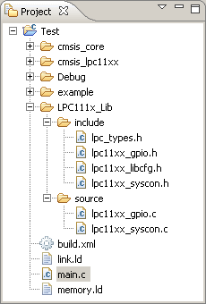

Project Explorer View
The Project Explorer view displays in a tree structure similar to the C/C++ Projects view, but it is not limited to C and C++ projects. In this view you can do the following things:
- Browse the elements of C/C++ source files
- Open files in the editor view
- Manage existing files (copy, paste, delete, refresh)
- Restore deleted files from local history
Files that you selected in the Project Explorer view affect the information which display in other views.

Toolbar:
| Icon |
Name |
Description |
| |
Top Level Elements |
Choose whether to show working sets or projects as top level elements. Choosing working sets allows easy grouping of projects in large workspaces. |
| |
Select Working Set
|
Opens the Select Working Set dialog to allow selecting a working set for the view. |
| |
Deselect Working Set
|
Deselects the current working set. |
| |
Edit Active Working Set
|
Opens the Edit Working Set dialog to allow changing the current working set. |
|
Customize View |
This command allows customization of view filters and content modules. The previous will allow you to supress the display of certain types of files while the later will allow entirely new types of content to be shown in the view. |
|
Link with Editor |
This command toggles whether the view selection is linked to the active editor. When this option is selected, changing the active editor will automatically update the selection to the resource being edited. |
Project Explorer view icons:
| Icon |
Description |
|
C or C++ file |
|
Class |
 |
Macro Definition |
 |
Enum |
 |
Enumerator |
 |
Variable |
 |
Field private |
|
Field protected |
|
Field public |
|
Include |
|
Makefile |
 |
Method private |
|
Method protected |
|
Method public |
|
Namespace |
|
Struct |
 |
Type definition |
 |
Union |
|
Function |
|